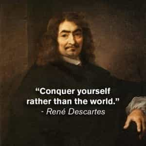
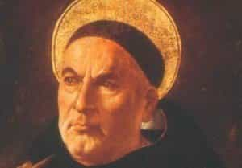
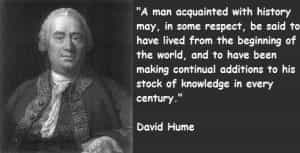
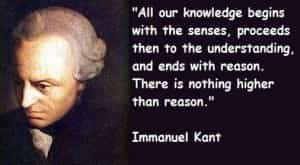

< < < Back
Philosophical Approaches To Proving The Existence Of God – Return Of Kings
Atheist polemicists portray religious faith as an irrational belief that has no supporting evidence at all. Theists reply that of course there is evidence for the existence of God, the atheists respond that it’s not real evidence, and round and round they go. It’s not my purpose here to convert you to Christianity, although I’d be gratified if my writings played a part in that, however small. I suspect most RoK readers already have strong, settled opinions on the question of God’s existence.
My aim is to briefly outline the classical arguments for the existence of God. Some of these arguments are incomprehensible to the secular modern, as they assume a classical background in philosophy and theology, but that says more about the secular modern education system than it does about the arguments.
Christianity is integral to Western tradition over the past 2,000 years and all men should have a basic knowledge of why our ancestors believed what they did.
The Ontological Argument
St. Anselm of Canterbury (1033 – 1109) was probably the greatest mind of the Latin Church between St. Augustine of Hippo and St. Thomas Aquinas. As Archbishop, he came into conflict with the English Kings William II and Henry I, the sons of William the Conqueror, and was sent into exile on two occasions. He is chiefly remembered in philosophy and theology circles for creating the Ontological Argument for God. The argument can be found in Anselm’s work Proslogium:
[Even a] fool, when he hears of … a being than which nothing greater can be conceived … understands what he hears, and what he understands is in his understanding.… And assuredly that, than which nothing greater can be conceived, cannot exist in the understanding alone. For suppose it exists in the understanding alone: then it can be conceived to exist in reality; which is greater.… Therefore, if that, than which nothing greater can be conceived, exists in the understanding alone, the very being, than which nothing greater can be conceived, is one, than which a greater can be conceived. But obviously this is impossible. Hence, there is no doubt that there exists a being, than which nothing greater can be conceived, and it exists both in the understanding and in reality.
In layman’s terms, the argument can be summarized like this: By definition, God is a being than which none greater can be imagined; God exists as an idea in the mind; a being that exists as an idea in the mind and in reality is, everything else being equal, greater than a being that exists only in the mind; thus, if God only exists in the mind then we can imagine something greater than God; but we cannot imagine a being greater than God because it is incoherent to say we can imagine a being greater than the greatest possible being; therefore God exists.

Rene Descartes also devised an ontological argument for God’s existence grounded in his philosophical concepts of innate ideas and clear and distinct perception: I have an idea of a supremely perfect being; existence is necessary of perfection; therefore a supremely perfect being exists.
When most people hear the Ontological Argument for the first time, it strikes them as wrong somehow. They feel like they’ve been tricked even if they lack the philosophical language to pinpoint how exactly. If you don’t find the Ontological Argument compelling, neither did St. Thomas Aquinas or Immanuel Kant, so you’re in good company.
The Teleological Argument
The First Vatican Council (1869-1870) declared in its canons:
If anyone says that the one, true God, our creator and lord, cannot be known with certainty from the things that have been made, by the natural light of human reason: let him be anathema.
In other words, Catholics are doctrinally bound to believe that the existence of God can be proven through reason alone (even a reactionary extremist like me can appreciate the irony there.) The notion that God’s existence can be proven through created things is rooted in St. Paul’s letter to the Romans:
For the invisible things of him, from the creation of the world, are clearly seen, being understood by the things that are made; his eternal power also, and divinity: so that they [non-believers] are inexcusable.
St. Thomas Aquinas (1225-1274) devised five proofs for the existence of God. Unlike the Ontological Argument, which is rooted in pure concepts, Thomas relies on sense experience to guide his readers to the conclusion.

Thomas offers the proof from motion: we observe motion all around us. Whatever is in motion was once at rest until moved by something else, and that thing by something else, and so on. But if there is an infinite series of movers, motion never would have started and there would be no motion now. There is motion now, so there must be a first unmoved mover. This we call God.
The proof from efficient cause: everything in the world was made by something. Apple made your computer. Your parents made you. Again, if there were an infinite series of efficient causes, then nothing would have ever been started. But obviously we’re here so there has to be a first unmade maker. This we call God.
The proof from necessary being: there was a time when you and I did not exist. There will come a time when you and I no longer exist in this world. We are contingent beings, which means we do not exist necessarily. If existence is contingent, then there was once a time when nothing had yet come to be. Nothing comes from nothing, but because there is something now, there must be at least one necessary being, which we call God.
The proof from gradations of perfection: we evaluate all people and things in terms of how good, true, and beautiful they are. We have standards on how things and people ought to be. But those standards wouldn’t make sense unless we had a concept of that which is the most good, true, and beautiful. This we call God.
And finally, the argument from design: we observe design all around us. The bird’s wing is designed for flight, the human eye is designed for seeing, the earth’s environment is designed to support human life, and so on. Design implies a designer, and that designer is God.
We can see the influence of Aristotle in these five arguments. For that reason they are called teleological arguments because they presuppose meaning and purpose in creation (for example, Aristotle and Thomas would say that the telos of an acorn is to grow into an oak tree.)

David Hume responded that it’s a faulty analogy to compere the universe to man-made objects. We have not witnessed a universe being designed so we cannot be certain that it’s the result of design. Further, he argued that if nature itself contains the principle of order then the need for a designer is removed. Even if the universe is designed, Hume says it does not follow that the designer is the Christian God. I find Hume’s objections unconvincing, but I include them because he was a much better class of religious critic than the average SJW of today.
The Moral Argument
Immanuel Kant (1724 – 1804) famously objected to the Ontological Argument by stating that existence is not a predicate. He believed that all theoretical approaches to the question of God would fail because the nature of God transcends pure human reason.
Kant sought to ground both morality and God’s existence in practical human reason. However, it should be noted that Kant’s argument is less about God and more about justice in the hereafter: moral behavior is rational; it is only rational if justice is done; justice will only be done if God exists; therefore, God exists.

Obviously there is a lot of evil in this world. Sometimes crime pays. Bad things happen to good people, and good things happen to bad people. Kant believed that if morality was nothing but a cost-benefit analysis, many more people would choose evil if it was to their personal benefit. Like Pascal’s Wager, Kant’s argument is meant to influence our behavior in this world in expectation of judgment in the next world. If people are to choose happiness and virtue – the summum bonum – the afterlife must exist.
Cardinal John Henry Newman (1801 – 1890) argued from the existence of our conscience. Our conscience drives us to choose good even when it’s not in our best interest. If our conscience suggests the objectivity of moral truths, then God must exist to give those truths normative force.
Conclusions
I converted to the Catholic faith at the age of 24, so I don’t claim to be a disinterested observer in this debate. To be sure, many men believe in God because they were raised that way and they’ve never seriously questioned it. Similarly, many men weren’t raised in any particular faith and they’ve never seriously questioned their own secularism.
In a real sense, the existence or non-existence of God is the question upon which everything else hinges. Dostoyevsky said through the character of Ivan Karamazov that if God does not exist, then everything is permissible.
Anselm’s motto was “Fides Quaerens Intellectum,” or faith seeking understanding. Thomas taught that some truths can be known through faith and reason, but some truths can only be known through faith. Faith in God drove men to create some of humanity’s greatest artistic, philosophical, and political achievements. You may not believe, but most of your ancestors did. It was in the very air they breathed.
It’s a common place of atheist polemicists that religion has killed more people than any other force on earth. Even minimally educated readers should see that’s nonsense. Stalin alone killed more people than the Spanish Inquisition did in the 300 years of its existence. Christianity in particular has been declining in the West for at least a century. Is the world that much better for it?
Read More: The Lives and Opinions of Eminent Philosophers


{kind=link}
{kind=link}
{kind=link}
{kind=link}
{kind=link}